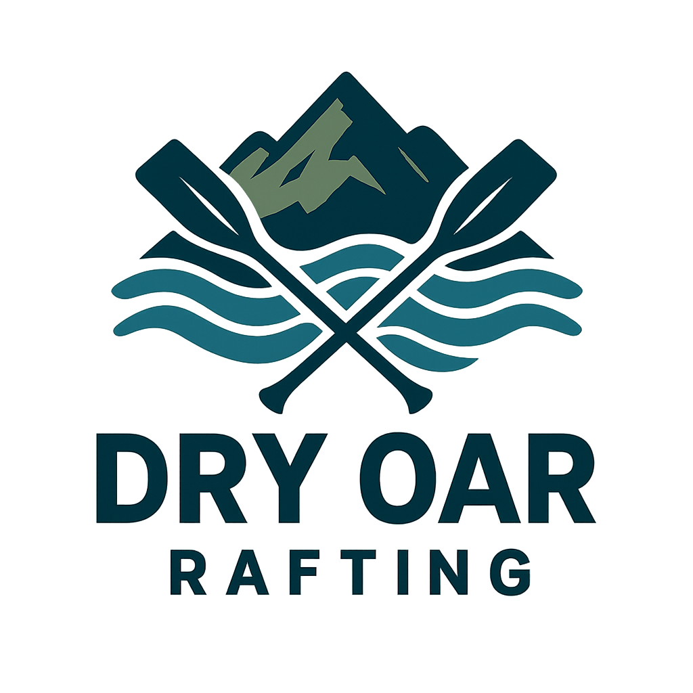

Overview
Purpose
MAKE MONEY / PROVIDE INFORMATION-
Obtaining money for the Dry Oar Rafting company is the goal. To accomplish this, ample
information is provided on rafting activities along with details on how you can schedule a rafting experience.
This website specializes in providing information concerning rafting the white water rapids in Idaho. In addition to providing facts, it also gives users the ability to schedule rafting trips with our professional rafting guides. Don't forget to check out our rafting lunch menu! As part of the rafting experience, a complementary lunch is provided and can be chosen before the expedition. This website is your one-stop deal to a weekend of adventure!
Audience
EVERYONE -
Country or City folks. People seeking an exciting weekend. This is for people who want to break up the monotony of
routine tasks or common weekend activities. Their needs aren't met because they are doing common or unexciting activities!
Most of my audience will access this website from a laptop or phone.
Where life is so busy, and the options so broad, it is hard to know how to spend as little money for as much fun as possible!
This is why we are presenting Dry Oar White Water Rafting! Eliminate the weekend boredom with an exhilarating rafting experience.
From city lovers to country folks, white-water rafting is for everyone. Due to the wonderful variety provided in Idaho,
rafters from the ages of 18+ can tackle our moderate to extreme rivers while those below the age of 18 (when supervised by an
adult) can give our mild rivers a try.
Spending the weekend on the rapids is a wonderful experience, it is a great activity for birthdays, anniversaries, graduations,
or for the ending of a long work week. Whether you are stuck in-doors the majority of the time or are always outside, the excitement of the
rapids is great for everyone!
Branding
Website Logo
Style Guide
Color Palette
| Primary | Secondary | Accent 1 | Accent 2 | Accent 3 |
|---|---|---|---|---|
Typography
Heading Font: "Georgia, 'Times New Roman', Times, serif"
Paragraph Font: "Arial, Helvetica, sans-serif"
Normal paragraph example
The best Whitewater Rafting in Colorado, White Water Rafting Company offers rafting on the Colorado and Roaring Fork Rivers in Glenwood Springs. Since 1974, we have been family owned and operated, rafting the Shoshone section of Glenwood Canyon and beyond.
Colored paragraph example
Trips vary from mild and great for families, to trips exclusively for physically fit and experienced rafters. No matter what type of river adventures you are seeking, White Water Rafting Company can make it happen for you.
Navigation with Hover
Site Map
Wireframes
Home